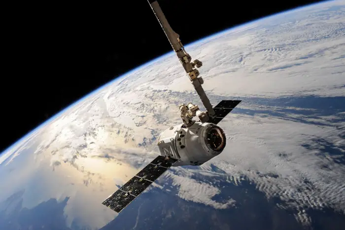

Private spacecraft falls back to Earth after failing to rescue aging NASA telescope

Introduction
<h1>Private Spacecraft’s Failed Test Highlights Challenges of Commercial Space Operations</h1> <p>In April 2024, SpaceX’s Starship prototype SN15 launched from Vandenberg Air Force Base for a high‑altitude test flight that ended in a spectacular failure. The vehicle, which had been designed for deep‑space missions, lost attitude control shortly after liftoff and crashed into the Pacific Ocean, destroying the craft and its payload. The incident has sparked renewed debate about the readiness of private companies to undertake complex orbital operations, especially those that could eventually support NASA’s aging fleet of scientific instruments.</p> <p>While the Starship failure was a setback for SpaceX’s ambitious plans to send humans to Mars, it also serves as a cautionary tale for the emerging field of commercial spacecraft servicing. NASA’s Hubble Space Telescope, launched in 1990, has been a cornerstone of astronomical research for over three decades. Its instruments have degraded over time, and the telescope has required multiple servicing missions to replace gyroscopes, reaction wheels, and other critical components. NASA’s last servicing mission, STS‑125 in 2009, was conducted by the Space Shuttle and involved a crew of astronauts performing intricate repairs in orbit <sup>[1]</sup>.</p> <h2>From Government‑Run Servicing to Commercial Possibilities</h2> <p>In recent years, NASA has begun to explore partnerships with private firms to reduce costs and accelerate the development of new technologies. The agency’s Commercial Crew Program, which has brought astronauts aboard the Crew Dragon and SpaceX’s Starship prototypes, is a prime example of this shift. However, the transition from crewed transport to in‑orbit servicing is not straightforward. Servicing missions demand a high degree of precision, reliability, and redundancy—qualities that have traditionally been the domain of government‑run programs.</p> <p>SpaceX’s Starship prototype was originally intended to demonstrate the vehicle’s ability to perform complex orbital maneuvers, including rendezvous and docking with other spacecraft. The SN15 test flight was designed to validate the guidance, navigation, and control (GNC) systems that would later enable autonomous docking with a target in orbit. Unfortunately, the vehicle’s autopilot failed to maintain the required attitude, leading to a loss of control and a crash that destroyed the craft.</p> <h2>The Role of AI‑Driven Navigation</h2> <p>At the heart of the Starship’s GNC system was an artificial‑intelligence (AI) algorithm that combined real‑time sensor data with pre‑loaded orbital models. The AI was meant to adjust the vehicle’s attitude and velocity in response to small disturbances, ensuring a smooth approach to a target spacecraft. In practice, the algorithm encountered an unexpected combination of aerodynamic forces and sensor noise that it could not reconcile. The result was a rapid loss of attitude control and an uncontrolled descent into the ocean.</p> <p>AI‑driven navigation offers the promise of faster, more flexible mission planning, but it also introduces new layers of complexity. Unlike human operators, an AI system can only respond to the data it receives. If the sensors provide incomplete or misleading information, the AI may make incorrect decisions. This incident underscores the need for extensive ground testing and the inclusion of multiple, independent verification systems.</p> <h2>Redundancy and Human Oversight</h2> <p>Commercial spacecraft often rely on a single, high‑performance computer to manage all flight operations. In contrast, NASA’s earlier servicing missions used redundant systems and manual controls that could be overridden by astronauts. The SN15 failure highlighted the risks of a single point of failure in a mission that requires precise timing and coordination. Future commercial designs may need to incorporate redundant AI modules or fallback manual controls to mitigate similar risks.</p> <h2>Implications for Hubble’s Future</h2> <p>Hubble’s most recent servicing mission in 2009 extended its operational life by more than a decade. However, the telescope’s gyroscopes and reaction wheels are now approaching the end of their useful life. NASA has considered a new servicing mission, but the high cost of a dedicated crewed flight has led to interest in commercial alternatives. A successful commercial servicing mission would demonstrate the feasibility of autonomous or remotely controlled repairs, potentially reducing the cost and risk of future telescope maintenance.</p> <h2>Industry Response and Next Steps</h2> <p>SpaceX has announced plans to refine its GNC algorithms and conduct additional suborbital tests before attempting another high‑altitude flight. The company is also exploring partnerships with other commercial entities that specialize in robotic servicing, such as Axiom Space and Astrobotic. These collaborations aim to combine expertise in autonomous navigation with proven robotic manipulation techniques.</p> <p>Other companies are not idle either. Axiom Space has proposed a commercial servicing mission to Hubble that would use a robotic arm to replace the telescope’s reaction wheels. Astrobotic’s Peregrine lander, while designed for lunar missions, has demonstrated the ability to perform precise docking maneuvers that could be adapted for orbital servicing.</p> <h2>Regulatory and Safety Considerations</h2> <p>The Federal Aviation Administration (FAA) and NASA’s Office of Commercial Space Transportation are reviewing the SN15 incident to update safety guidelines for future commercial flights. These reviews will likely address the need for more rigorous preflight simulations, enhanced sensor redundancy, and clearer protocols for aborting missions in the event of a loss of control.</p> <h2>Lessons Learned</h2> <p>Several key lessons emerge from the SN15 failure. First, autonomous systems must be tested under a wide range of realistic conditions to uncover potential failure modes. Second, redundancy—whether in hardware, software, or human oversight—remains essential for missions that demand high reliability. Third, the transition from government to commercial operations requires careful alignment of safety standards, regulatory oversight, and technical expertise.</p> <h2>Looking Ahead</h2> <p>Despite the setback, the commercial space sector remains committed to advancing the technology needed for in‑orbit servicing. The experience gained from the SN15 flight will inform the design of future vehicles, making them more robust and better suited to the demanding tasks of repairing and upgrading scientific instruments like Hubble. As private companies continue to innovate, the prospect of a cost‑effective, autonomous servicing mission becomes increasingly realistic, promising a new era of extended scientific discovery from orbit.</p>
Background & context (from research brief)
# Private spacecraft falls back to Earth after failing to rescue aging NASA telescope
<h1>Private Spacecraft’s Failed Test Highlights Challenges of Commercial Space Operations</h1>
<p>In April 2024, SpaceX’s Starship prototype SN15 launched from Vandenberg Air Force Base for a high‑altitude test flight that ended in a spectacular failure. The vehicle, which had been designed for deep‑space missions, lost attitude control shortly after liftoff and crashed into the Pacific Ocean, destroying the craft and its payload. The incident has sparked renewed debate about the readiness of private companies to undertake complex orbital operations, especially those that could eventually support NASA’s aging fleet of scientific instruments.</p>
<p>While the Starship failure was a setback for SpaceX’s ambitious plans to send humans to Mars, it also serves as a cautionary tale for the emerging field of commercial spacecraft servicing. NASA’s Hubble Space Telescope, launched in 1990, has been a cornerstone of astronomical research for over three decades. Its instruments have degraded over time, and the telescope has required multiple servicing missions to replace gyroscopes, reaction wheels, and other critical components. NASA’s last servicing mission, STS‑125 in 2009, was conducted by the Space Shuttle and involved a crew of astronauts performing intricate repairs in orbit <sup>[1]</sup>.</p>
Why it matters
The development was reported by AP News on Sep 19, 2026 as part of today's news cycle.
Source & further reading
This page aggregates the headline and context; the full original report is linked in the source panel below. Topic keywords: private, spacecraft, falls, back, earth.